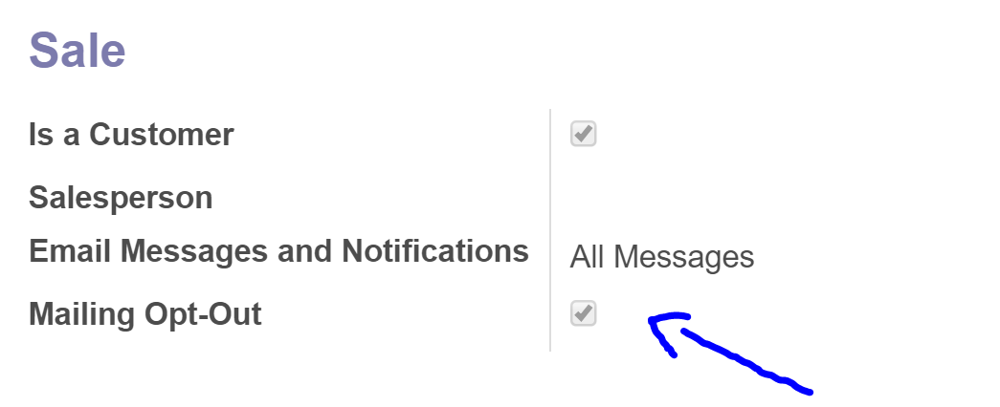

This module set the default value of field opt-out as True. This means:
- If opt-out is checked, this contact has refused to receive emails for mass mailing and marketing campaign. Filter Available for Mass Mailing allows users to filter the partners when performing mass mailing.

If you need help with installation or some additional features feel free to contact
Email: Piotr Cierkosz
Website: www.cier.tech